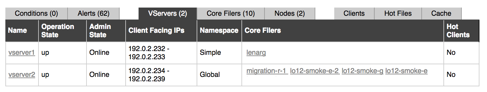
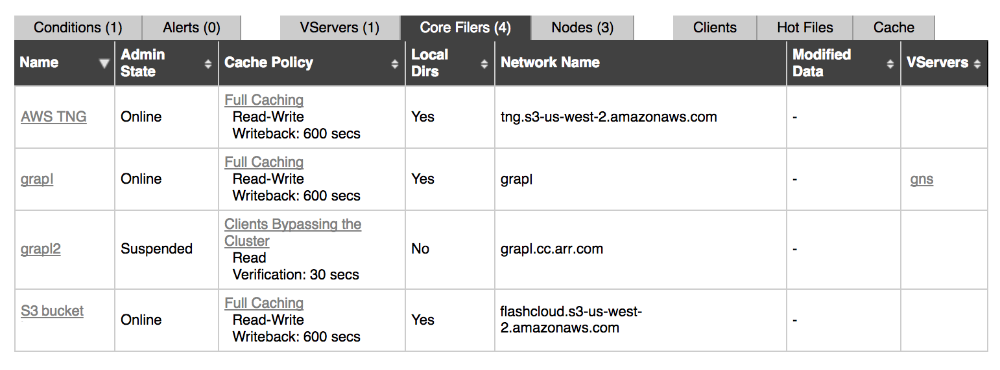
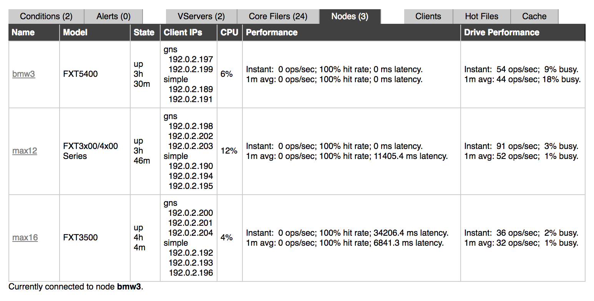
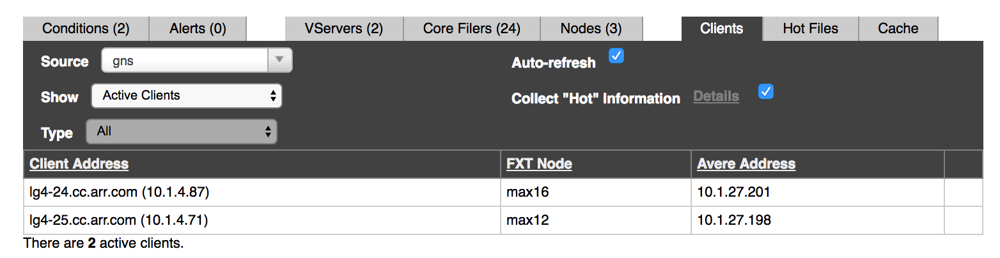
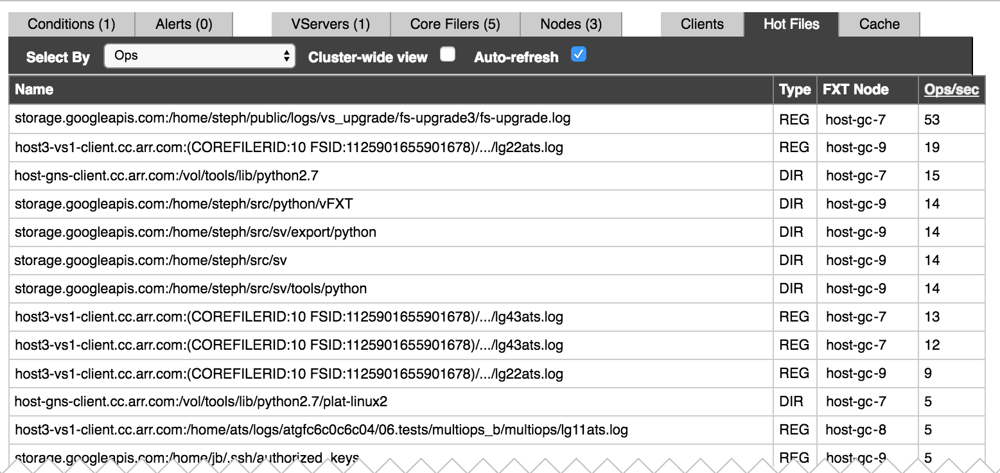
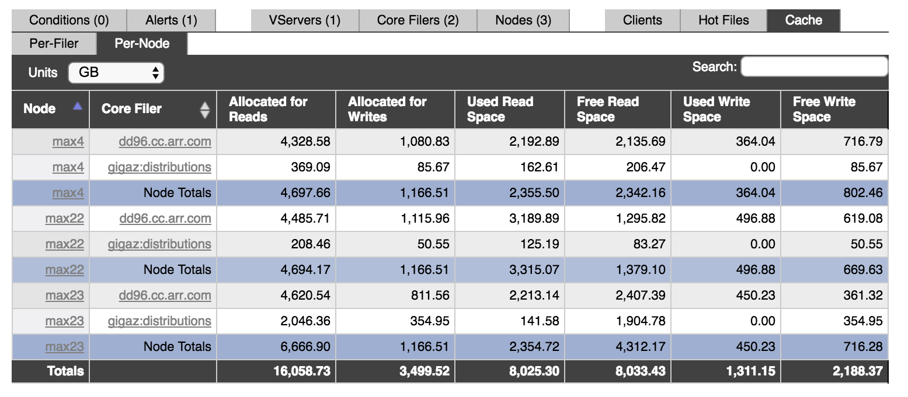
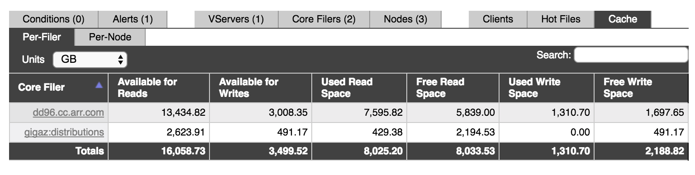

Dashboard Status Tabs¶
This section describes the status table that appears in the middle of the Avere Control Panel dashboard. The status table is tabbed; click a tab to view information in that section.
The table includes the following pages:
Conditions and Alerts¶
The Conditions tab and the Alerts tab show the status and error notifications for the cluster. Read Monitoring Conditions and Alerts for complete details about the information on these status tabs.
VServers¶
The VServers tab in the dashboard status bar gives basic information about each vserver in the cluster. (Read Creating and Working with VServers in the in the Avere OS Configuration Guide for basic information about cluster vservers.)
{kind=link}
The VServers tab shows the following information:
Name – The name of each vserver.
Click on the name to go to the vserver’s VServer Details page on the Settings tab. (This settings page is described in more detail in VServer > VServer Details in the Avere OS Configuration Guide.)
Operation State – Whether the vserver is up or down.
Other statuses can be seen if the system is restarting or rebalancing after a node has failed. (Examples include “node is not responding”, “hardware fault”, “subprocess reset”, “core filer unreachable”, and “reduced performance”.) These messages typically include links to a related condition notification, and as the cluster works through resolving the interruption, the messages should progress until the state returns to “up”.
Admin State – The administrative state shows the vserver’s cluster status:
- Online: Normal operational status, available to the cluster
- Removing: The vserver is in the process of being removed from the cluster
- Removed: The vserver was previously recognized by the cluster, but has been removed from the cluster’s configuration
- Suspended: The vserver is recognized by the cluster but unavailable
- Flushing: The vserver is transferring data from the cache to a core filer
Client Facing IPs – The IP address range available to client machines from this vserver.
Namespace – Displays the type of namespace the vserver uses: Global (the default) or Simple (a legacy configuration). Read Using a Global Namespace in the Avere OS Configuration Guide to learn more.
Core Filers – Lists the core filers associated with the vserver.
Click the name of a core filer to go to its Core Filer Details page, described in Core Filer > Core Filer Details in the Avere OS Configuration Guide.
Hot Clients – Displays Yes if this vserver is configured to record information about clients that are creating a greater than average load. You can view hot clients information in the Clients tab.
Core Filers¶
The cluster’s core filers are shown on the Core Filers status tab.
{kind=link}
The tab shows the following information for each core filer:
Name – The name of this core filer.
Click the name to go to the core filer’s Core Filer Details page on the Settings tab. (Read Core Filer > Core Filer Details in the Avere OS Configuration Guide to learn more.)
Admin State – The administrative state of the core filer, any of the following values:
- Online: The core filer is available to the cluster.
- Removing: The core filer is in the process of being removed from the cluster.
- Removed: The core filer was previously recognized by the cluster, but has been removed from the cluster configuration.
- Invalidating: The core filer is removing all data from the cache.
- Suspended: The core filer is not available to the cluster, but is still recognized by the cluster.
- Flushing: The cluster is transferring information from the cache to the core filer.
Cache Policy – The cache policy associated with each core filer. You can click on the policy link to go to the core filer’s Cache Policy page, further described in Core Filer > Manage Cache Policies in the Avere OS Settings Guide.
Local Dirs – Whether or not the cluster can create directories on the core filer. This is defined in the Cache Policy page on the Settings tab, further described in Core Filer > Manage Cache Policies in the Avere OS Settings Guide.
Local Directories must be enabled for cloud core filers, and in order to use FlashMove or FlashMirror. Additional information is included in the Avere OS Settings Guide – read Cache Policy Settings - Basic Options.
Network Name – The host name or the IP address of the core filer.
Modified Data – Number and age of files not yet written back to the core filer. (This is sometimes known as “dirty data”.) The cache can hold modified data only for core filers whose cache policy includes the Read/Write caching mode.
VServers – Lists the vservers associated with this core filer.
If no vservers are listed, then the core filer has been added to the cluster but not mapped to a junction or otherwise associated with a vserver.
Click a vserver name to open the VServer Details page. (Read VServer > VServer Details in the Avere OS Configuration Guide for more information.)
Nodes¶
The cluster’s FXT nodes are shown in the Nodes status tab.
{kind=link}
The following information is shown:
Name – The node name.
Click the name to go to this node’s Node Details page. (The Node Details page is part of the Settings tab but is not included in the side menus in that section.) Read Node Details in the Avere OS Configuration Guide for more information.
Model – The hardware type, or the VM instance type if the node is a vFXT.
State – Whether the node is up, and how long it has been running.
Client IPs – Client IP addresses currently located on the node. Addresses are grouped under the names of their vservers.
CPU – Approximate CPU usage, displayed as a percentage of capacity.
Performance – A summary of the node’s performance. Statistics are given for two time ranges: Instant is the node’s current performance, and 1 m avg is its performance averaged over the previous minute.
Statistics included are:
- Number of operations per second. These can be read, write, or metadata management operations.
- Hit rate: The percentage of client requests being serviced by the node’s cache, without needing to be forwarded to the core filer.
- Latency between a client and the node, measured in milliseconds.
Drive Performance – Performance values for the disk drives in this node. This figure includes all of the node’s drives. Like node performance, the drive performance figures give performance information in operations per second for the current instant and averaged over the previous minute.
Clients¶
The Clients tab shows information about clients currently active on the cluster.
The options in the Source selector change what information is shown in the table. For example, if you choose a vserver in Source, only clients connected to that vserver appear in the table.
{kind=link}
You can show clients filtered by vserver, by core filer, or by node.
If you choose a vserver that has hot clients data collection enabled, you can view hot clients (clients that are making the most requests).
Because the information on the Clients status tab is complicated, it is included in a separate chapter. Read Clients Status Tab to learn more.
Hot Files¶
A hot file is a file associated with a high number of operations relative to other files. (Operations include file reads or writes and metadata updates.) The number of operations typically indicates that the file is in heavy use.
The Hot Files status tab shows the files with the most operations.
{kind=link}
Use the Select By drop-down list to select the attribute to use for selecting hot files.

Options include the following:
- Ops – Total operations per second performed on each file.
- Bytes Read/Written – The number of bytes processed per second on each file. When this option is selected, the number of bytes read and written are listed for each file, and you can sort the table by these values.
- Dir Updates – The number of directory updates and other metadata operations per second performed on each file.
Check the Cluster-wide view checkbox if you want to show hot files over the entire cluster instead of by node. Although hot files are determined by core filer (that is, they are the most active files on their core filer), the standard view lists them by the cluster node that served them. If the same file is served from multiple nodes, the standard view will show multiple rows for that one file; the cluster-wide view shows one row for that file and aggregates all the times it was served by all nodes.
The Auto-refresh checkbox causes the display to update automatically when selected.
Cache¶
The Cache status tab gives details about the available space and current cache utilization on the cluster.

The Avere cluster allocates cache space based on a number of factors, including the number of nodes in the cluster and the node’s obligations to store data for a High Availability (HA) partner.
The storage space available in each node is divided into read caching space and write caching space. For a core filer without write caching, no space is allocated to writes. The cluster automatically sets the percentage of the storage that can be used for caching writes (sometimes called “dirty data”).
Read/Write caching is controlled by core filer cache policies – read Core Filer > Manage Cache Policies in the Avere OS Configuration Guide to learn more.
When the node cache reaches its maximum used space value, the system removes least-used files from the cache to make room for new files. Data is written back to the core filer as needed. (This process is called flushing the cache.) Note that the maximum used space value might be less than the amount of free space shown because of HA mirroring and other technical requirements.
The dashboard status table can show cache information organized by cluster node (as in the screenshot above) or by core filer. Click the Per-Filer or Per-Node sub-tabs to switch the view.
Each view includes tools for searching and for switching the units shown.
- Click the drop-down menu labeled Units to choose the unit size shown in the table. Options range from 16K blocks to terabytes.
- Enter text in the Search field to show only table rows that include that text. Clear the search box to show all rows.
Node View¶
Cache space in the Avere cluster is split among all of the cluster’s nodes. Typically, each node hosts an equal portion of the cache space designated for one core filer.
The Per-Node view shows the cache space reserved for a particular core filer on a particular node. You can sort by the Node and Core Filer columns depending on whether you want to see one node’s cache space grouped together or one core filer’s cache space together.
You also can use the Search field at the top of the table to filter by node or by core filer.
{kind=link}
When the table is sorted by node (as in the screenshot above), cache totals are displayed for each node. When sorted by core filer, the core filer totals are displayed.
The Allocated for Reads and Allocated for Writes columns show the total space reserved for each type of caching on the specified node for the specified core filer. The other columns break down the space into Used and Free space.
Clicking a core filer name loads its Core Filer Details settings page. Clicking a node name loads its Node Details settings page. These pages are described in detail in the Avere OS Configuration Guide – read Core Filer > Core Filer Details and Node Details.
Core Filer View¶
The Per-Filer table gives a cluster-wide view of cache space. The values shown for each core filer are the sum of space allocated on all of the cluster’s nodes to cache files from that core filer.
{kind=link}
The Available for Reads and Available for Writes columns show the cluster’s total space reserved for each type of caching for the specified core filer. The other columns break down the space into Used and Free space.
Clicking a core filer name loads its Core Filer Details settings page. This page is described in detail in Core Filer > Core Filer Details in the Avere OS Configuration Guide.